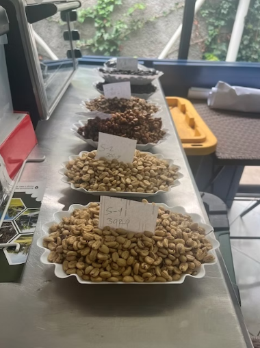

La Experiencia
Ven por el café. Quédate por el proceso.
En Dos Mundos, el café se vive con calma y detalle. Somos una tostadora boutique y un espacio co-lab donde la calidad, la precisión y la exploración se sienten en cada taza.
Si vienes a disfrutar, preparamos cada taza con precisión y calma. Si vienes a conversar, encontrarás un espacio abierto a la exploración, la técnica y el intercambio de ideas.
Del grano a la taza
Todo comienza en el origen. Trabajamos con micro-productores de Ahuachapán y Chalatenango, cuidando selección, trazabilidad y comercio justo. Cada lote se elige por su carácter: no buscamos uniformidad; buscamos expresión.
Tostado con intención
Tostamos en lotes pequeños para cuidar cada detalle. Ajustamos curvas y tiempos para revelar lo mejor del grano sin ocultar su identidad. Cada perfil es una decisión: aroma, dulzor, cuerpo y balance.
Laboratorio y muestras
Probamos, comparamos y afinamos. Trabajamos con micro-lotes y muestras para perfeccionar perfiles y explorar nuevas posibilidades. Aquí el café no es solo consumo: también es estudio.
Catas y conversación
Realizamos sesiones de cata para entender aromas, cuerpo y acidez. Si te interesa la técnica, la conversación y el intercambio, este es tu lugar.
El espacio
Nuestro café en San Benito es un lugar de calma y detalle. Espresso, filtrados y métodos, preparados con precisión por baristas profesionales. Si vienes a disfrutar, cada taza se hace exactamente como la quieres.